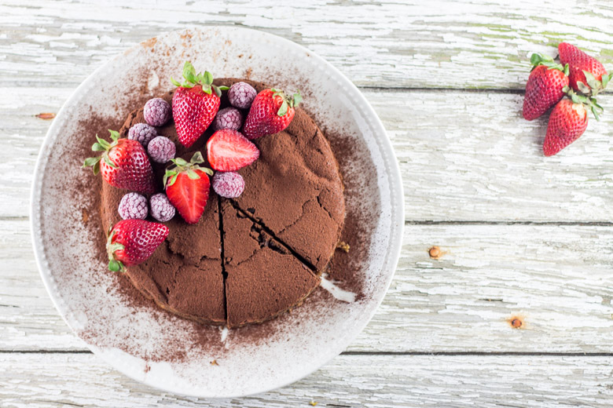
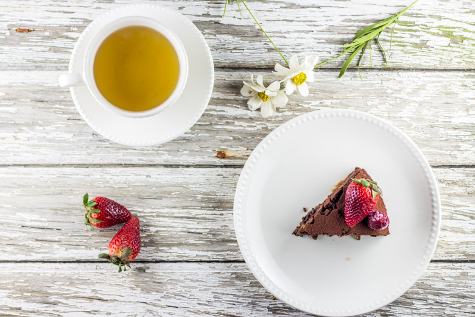
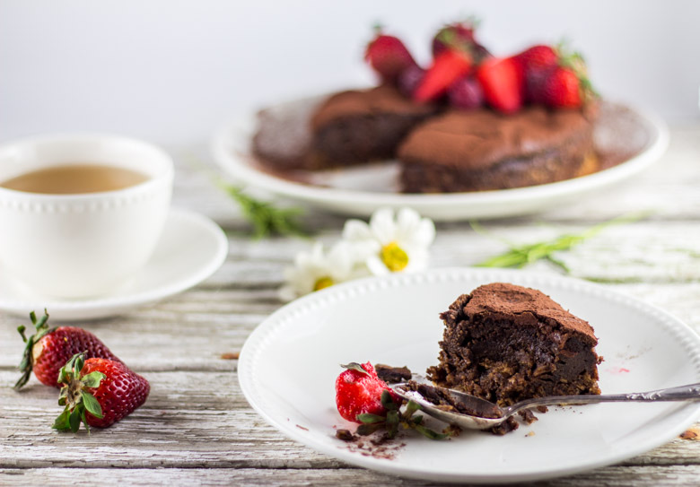
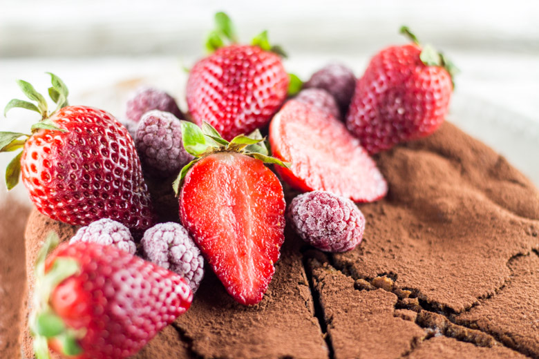

Gâteau super fondant au chocolat avec une cuisson au bain marie

Pâques est peut-être fini depuis peu mais ce n’est pas une raison pour ne plus manger de chocolat. Je vous propose alors un fondant au chocolat avec une cuisson au bain marie.
Il serait d’ailleurs assez triste de devoir se restreindre à un seul jour dans l’année pour manger du chocolat (moi en tout cas je ne pourrais pas!!). Je ne sais pas si ça vous arrive mais il m’arrive quelquefois d’avoir de très très grosses envies de manger du chocolat à tel point que cela en devient totalement obsessionnel. (promis juré je ne suis pas enceinte!). Bref, tout ça pour dire que dernièrement c’est ce qu’il m’est arrivée et j’avais très très envie d’un fondant au chocolat. J’avais entendu dire qu’une cuisson au bain marie permettait d’obtenir à coup sur un gâteau ultra fondant alors pourquoi pas essayer! Bon n’allez pas penser qu’il suffit de mettre la pâte à gâteau au bain marie au dessus de vos plaques de cuisson^^ Je parle bien d’une cuisson au bain marie dans un four avec le gâteau dans moule. Beaucoup de cheesecakes sont cuits de cette façon pour éviter qu’ils ne se craquellent de trop. Ce fondant au chocolat est d’ailleurs une sorte de cheesecake sans cheese, la ressemblance étant qu’il y a une base de biscuits secs et du beurre ainsi qu’une texture fondante à la sortie du four.
Pour réussir une cuisson au bain marie, il y a tout de même quelques règles à respecter pour éviter que le fondant au chocolat ne devienne un mouillé au chocolat. Il faudra penser à bien envelopper les contours de votre moule de papier d’aluminium (surtout si vous utilisez un moule à manqué) pour éviter que l’eau ne pénètre dans le moule pendant la cuisson.. Aussi, pour ne pas fausser la durée de cuisson, il faudra que l’eau du bain marie soit bouillante au moment d’enfourner.Pour finir, il faudra sortir le gâteau de l’eau dès la sortie du four.
Évidemment, je n’ai pas pu m’empêcher de rajouter des framboises mais surtout des fraises histoire d’assouvir totalement mes envies et ce fut un pur moment de plaisir! 😀 Alors si comme moi vous avez des envies de fondant au chocolat et de fraises je vous laisse découvrir la recette et j’espère qu’elle vous plaira 🙂
Ingrédients
- Oeufs - 4
- Beurre + une noix pour beurrer le moule - 160g
- Biscuits secs (j'ai utilisé des eventails et cigares pour glaces) - 150g
- Chocolat noir - 170g
- Sucre en poudre - 100g
- Eau - 100ml
- Cacao en poudre
Instructions
- Préchauffer le four à 180°
- Tapisser le fond de votre moule à manqué de papier sulfurisé
- Écraser les biscuits
- Faire fondre 60 g de beurre
- Verser le beurre sur les biscuits et mettez-les au fond de votre moule en tassant bien
- Placer au frais une bonne heure
- Faire fondre le chocolat au bain marie
- En même temps, préparer un sirop : dans une casserole, mélanger l'eau et le sucre
- Faire bouillir
- Hors du feu, ajouter le chocolat fondu et mélanger
- Ajouter le beurre restant (100g) coupé en morceaux et remuer jusqu'à ce qu'il soit totalement fondu
- Ajouter les œufs un à un en remuant bien pour avoir un mélange homogène
- Beurrer votre moule
- Verser cette préparation sur les biscuits dans votre moule
- Entourer bien les bords de votre moule de papier aluminium pour éviter que de l'eau ne s'y infiltre pendant la cuisson
- Préparer un plat (autre moule par exemple) pouvant recevoir votre moule
- Verser de l'eau bouillante dedans (l'eau doit monter d'environ 5/6 cm) et mettez le sur une grille au four
- Apporter le moule dans lequel le gâteau et placez le dans le récipient contenant l'eau bouillante
- Cuire pendant 40 minutes
- A la sortie du four, sortir le moule de l'eau et le papier aluminium
- Laisser le gâteau reposer au frais pendant 1 heure sans le démouler
- Démouler le gâteau et saupoudrez le de cacao au moment de servir
- Déguster.(Au goûter avec un thé c'est parfait!!)




Les tips de la communauté
Fondant au chocolat très gourmand très apprécié des amateurs de chocolat. Technique de cuisson au bain-marie donne une texture fondante remarquable. Les photos sont universellement saluées pour leur qualité et l'aspect trop gourmand du gâteau.
Astuces
- Cuisson au bain-marie donne la texture unique et fondante
- Recette très riche, portions généreuses recommandées
- Convient aux occasions spéciales grâce à la présentation
- Service avec fruits frais complémente bien la richesse du fondant
Variantes suggérées
- Peut être accompagné de fruits variés en garniture
Ajustements signalés
- Margarine peut remplacer le beurre pour régime sans lactose (à tester)